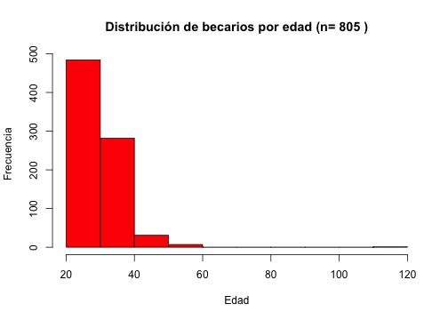
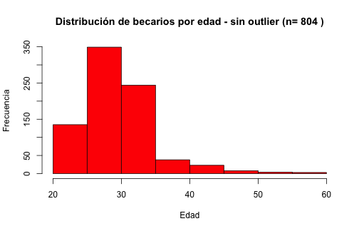
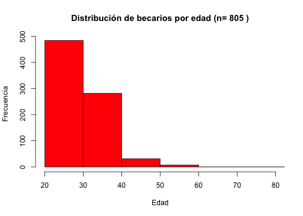
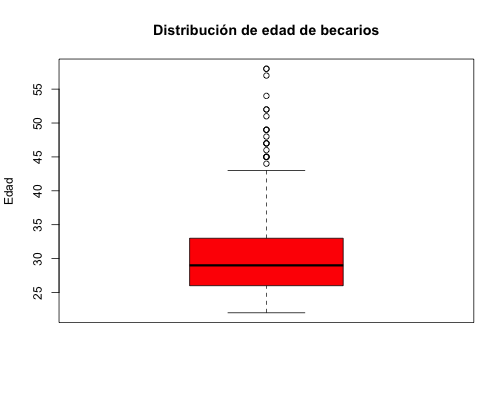
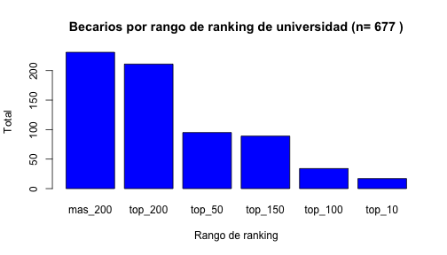
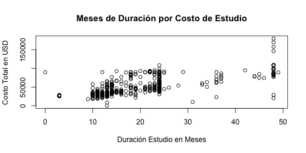
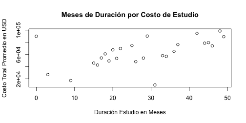
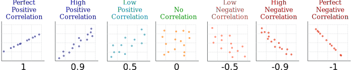

Es un método para entender los datos y sus relaciones a través de herramientas estadísticas y gráficas
Análisis Exploratorio
Curso de Data Science con Impacto Social
Jorge Saldivar
Universidad Católica "Nuestra Señora de la Asunción"
¿Qué es el Análisis Exploratorio de Datos?
Análisis Exploratorio de Datos
- Normalmente se lleva a cabo antes de análisis estadísticos más formales y rigurosos
- Puede revelar nuevas preguntas e ideas o incluso servir como punto de partida para la construcción de modelos predictivos
- Sirve como barrera de protección ante datos de mala calidad
Objetivos
Entender la distribución de los valores que toma una variable
Verificar la relación entre variables
Validar hipótesis de manera informal
Comprobar suposiciones e intuiciones acerca de los datos
¿Qué hacer primero?
El primer paso en un análisis exploratorio es entender el comportamiento de las variables que son centrales para el trabajo.
Esto requerirá la creación de resumenes y gráficos que ilustren los valores que toman estas variables.
Inicialmente se exploran las variables de interés una a una
Exploración de una variable
- Utilizando los datos de becal exploremos, por ejemplo, la distribución de la edad de los beneficiarios
hist(becal_m$edad, main=paste("Distribución de becarios por edad (n=",nrow(becal_m),")"),
ylab="Frecuencia", xlab="Edad", col = "red")

Prestar atención a anomalías y outliers
Difícil que alguien tenga 120 años, más difícil aún que esa persona pida una beca
Casos como esto indican la presencia de valores extremos en el data set, así como también, datos de mala calidad o limitaciones en los datos.
En situaciones de este tipo se debe inspeccionar el dato y tomar acciones al respecto. Por ejemplo, se podría eliminar el registro, ajustar el valor, o remplazarlo.

Prestar atención a anomalías y outliers
- Ejemplo sin eliminar el outlier pero solo limitando los valores del eje x a través del parámetro
xlimde la funciónhist
hist(becal_m$edad, main=paste("Distribución de becarios por edad (n=",nrow(becal_m),")"),
ylab="Frecuencia", xlab="Edad", col = "red", xlim = c(20, 80))

Estadísticas descriptivas para variables numéricas
La distribución de valores en una variable se puede entender también por medio de estadísticas descriptivas (promedio, mediana, mínimo, máximo, etc.)
Una manera rápida de acceder a estas estadísticas es por medio del comando
summary
summary(becal$edad)
## Min. 1st Qu. Median Mean 3rd Qu. Max.
## 22.00 26.00 29.00 30.13 33.00 58.00
Cuantiles
Otra manera de inspeccionar como se distribuyen los valores de una variable es observando los cuantiles, que son puntos que dividen la distribución en cuatro partes
En R los cuantiles de una distribución se calculan por medio de la función
quantile
quantile(becal$edad)
## 0% 25% 50% 75% 100%
## 22 26 29 33 58
- También puedo especificarle puntos específicos de la distribución que me gustaría inspeccionar
quantile(becal$edad, probs=c(0.40,0.65,0.90))
## 40% 65% 90%
## 28 31 35
Boxplots
Permite tener una vista general de la distribución de una variable
Condensa en un solo gráfico información sobre el media de la distribución, los valores mínimo y máximo (excluyendo los outliers), el rango donde se encuentran el 50% de los valores (IQR)

Boxplots en R
boxplot(becal$edad, col='red', main='Distribución de edad de becarios',
ylab='Edad')

Variabilidad de datos
Un aspecto importante al momento de inspeccionar una variable es medir la dispersión de los datos con respecto al valor medio de la distribución
Una primera medida es calcular la varianza por medio de la función
var
var(becal$edad)
## [1] 27.01779
- Otra forma de conocer la disperción es a través de la desviación estándar que es la raiz cuadrada de la varianza y se calcula con la función
sd(osqrt(var(becal$edad)))
sd(becal$edad)
## [1] 5.197864
Distribución de variables categóricas
La función
tablesirve para entender la cantidad de valores por categoría en variables categóricasPor ejemplo, podemos averiguar la distribución de beneficiarios por ranking de universidad
table(becal$categoriauni)
##
## mas_200 sin dato top_10 top_100 top_150 top_200 top_50
## 231 127 17 34 89 211 95
Distribución de variables categóricas
- Gráficamente podemos estudiar la distribución de valores en variables categóricas utilizando el resultado de la función
tableen gráficos de barra
barplot(table(becal$categoriauni),
main=paste("Becarios por rango de ranking de universidad (n=",nrow(becal),")"),
ylab="Total", xlab="Rango de ranking", col="blue")

Distribución de variables categóricas
- Podríamos mejorar la gráfica eliminando la categoría sin dato, que no nos interesa por el momento, y ordenando las categorías de mayor a menor
becal_limpio = subset(becal, categoriauni != "sin dato") # elimina los registros "sin dato"
dis_categoriauni = table(droplevels(becal_limpio$categoriauni))
categoria_ordenadas = sort(dis_categoriauni, decreasing = T) # ordena las categorias de mayor a menor
barplot(categoria_ordenadas, main=paste("Becarios por rango de ranking de universidad (n=",
nrow(becal_limpio),")"), ylab="Total", xlab="Rango de ranking", col="blue")

Exploración de dos variables
Utilizando los datos de becal exploremos, por ejemplo, la asociación entre meses de duración y costo del curso
Gráficamente podemos utilizar scatter plots para examinar la relación entre estas variables
plot(becal$mesesdeduraciondeestudios, becal$totalgralusd,
ylab="Costo Total en USD", xlab="Duración Estudio en Meses",
main="Meses de Duración por Costo de Estudio")

Promedios condicionales
groupo_meses = group_by(becal, mesesdeduraciondeestudios)
total_x_gm = summarize(groupo_meses,
total_mean = mean(totalgralusd))
plot(total_x_gm$mesesdeduraciondeestudios, total_x_gm$total_mean,
ylab="Costo Total Promedio en USD", xlab="Duración Estudio en Meses",
main="Meses de Duración por Costo de Estudio")

Correlación
En estadística una de la técnicas más comunes para el estudio de asociaciones entre variables es la correlación
La correlación mide que tanto dos variables se encuentran linealmente relacionadas. A diferencia de la covarianza que determina simplemente si dos variables cambian a la par, la correlación mide la fuerza de la relación entre ellas
\[r = Cov(x,y)/Sx*Sy\]
- El resultado de una análisis de correlación es un coeficiente (r o Person's r) entre -1 y 1. Los extremos indican correlación perfecta entre las variables. Una correlación negativa indica que las variables cambian en sentido contrario, mientras que una correlación positiva demuestra que ambas variables cambian en la misma dirección

Correlación en R
En R correlación de Person se calcula por medio de la función cor
becal_sin_na = filter(becal, totalgralusd != 'NA') # elimino los valores ausentes
cor(becal_sin_na$mesesdeduraciondeestudios, becal_sin_na$totalgralusd)
## [1] 0.7211575